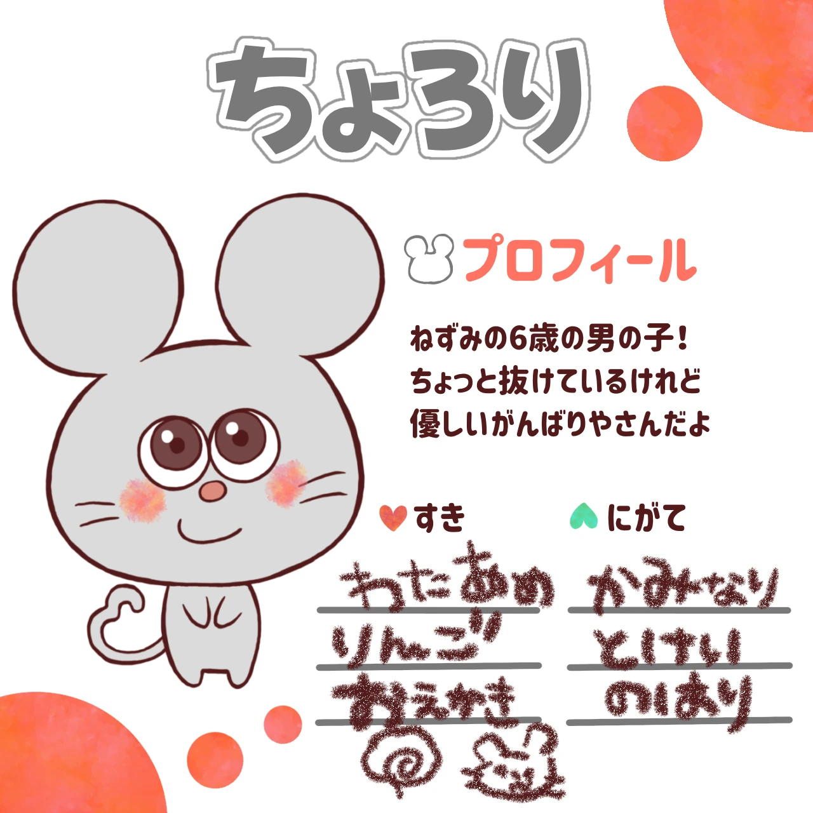
ちょろり
ねずみの６歳の男の子。ちょっと抜けているけれど、優しいがんばりやさん。
すき：わたあめ、りんご、おえかき
にがて：かみなり、とけい、のりもの
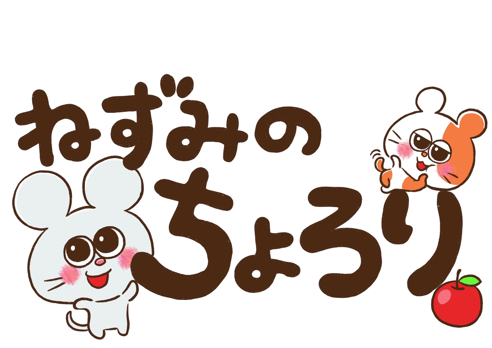
ちょろりとちゃまるの、ちいさくて楽しい毎日。
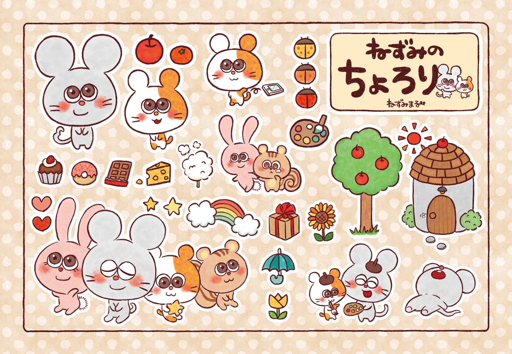
MEET THE FRIENDS

ねずみの６歳の男の子。ちょっと抜けているけれど、優しいがんばりやさん。
すき：わたあめ、りんご、おえかき
にがて：かみなり、とけい、のりもの
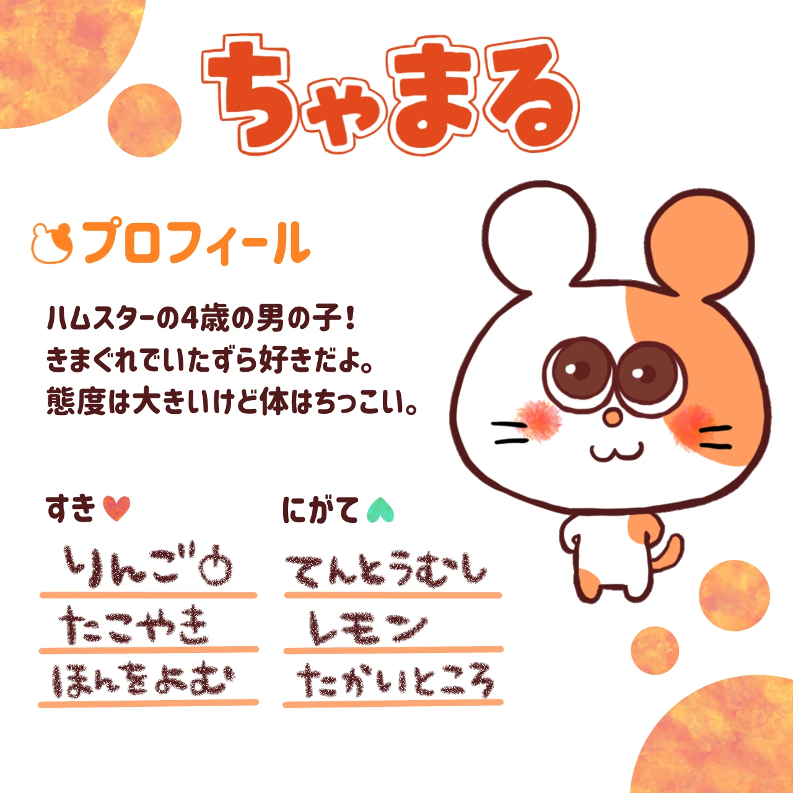
ハムスターの４歳の男の子。きまぐれでいたずら好き。態度は大きいけど、体はちっこい。
すき：りんご、たこやき、ほんをよむ
にがて：てんとうむし、レモン、たかいところ
SPOT THE DIFFERENCES
季節の風景や、なかまたちの日常がまちがいさがしに。２つの絵を見くらべて、ゆっくり遊んでね。
まちがいさがしを楽しむ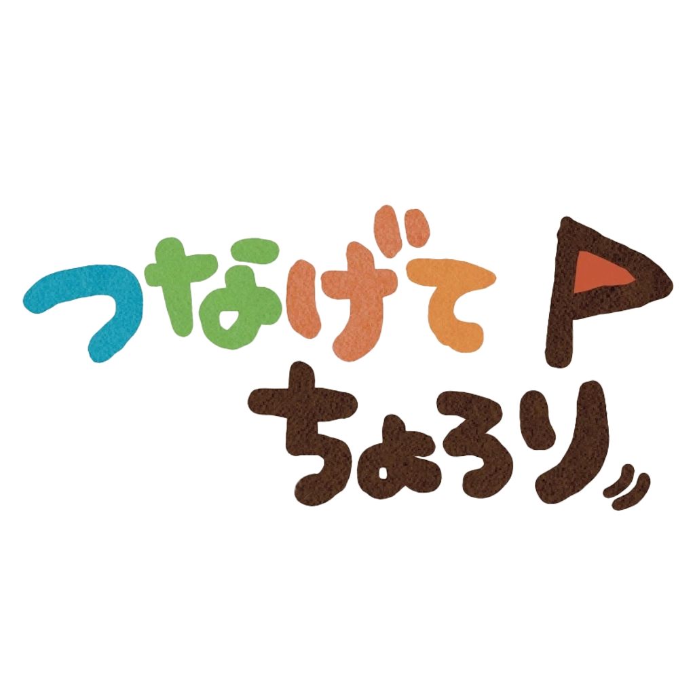
WITH YOU EVERY DAY
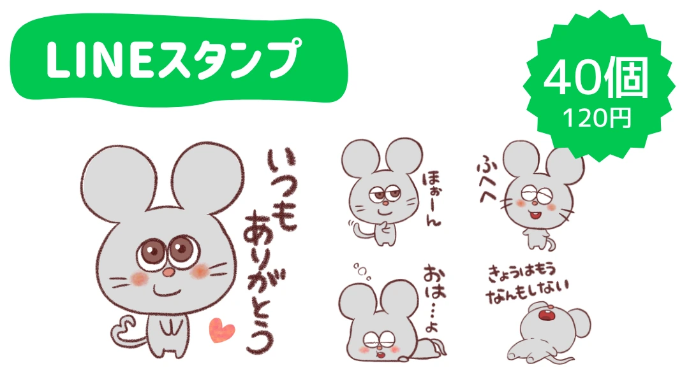
日常会話や、あいさつに。
LINE STOREを見る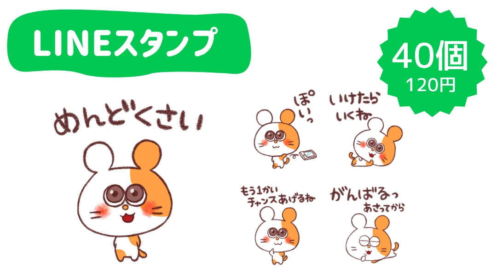
ちゃまるの表情を、トークのおともに。
LINE STOREを見る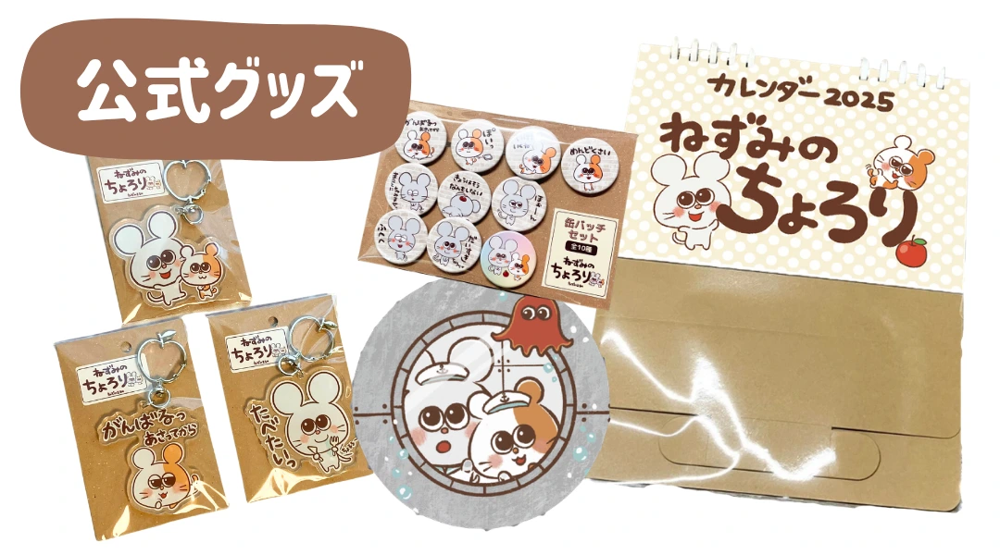
身近に置きたい、ちょろりたちのアイテム。
公式ショップを見る紹介画像は制作時のものです。現在の価格・販売内容は各ショップでご確認ください。
EXHIBITIONS & AWARDS
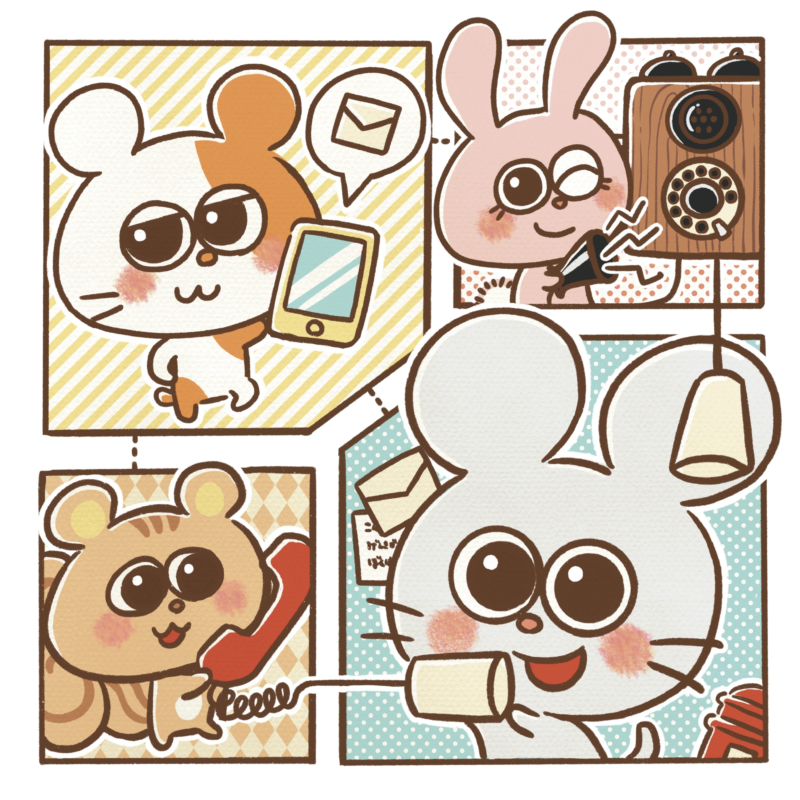
デジタルアート展 優秀賞
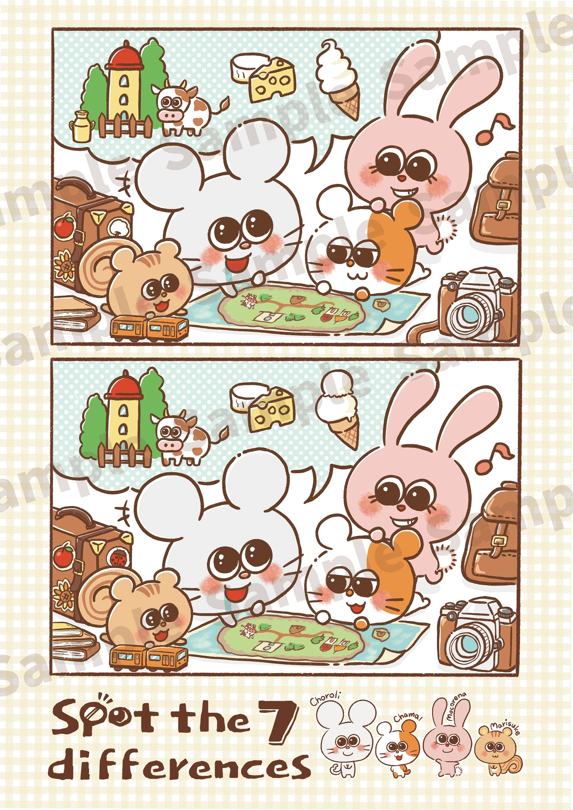
イラスト展示作品
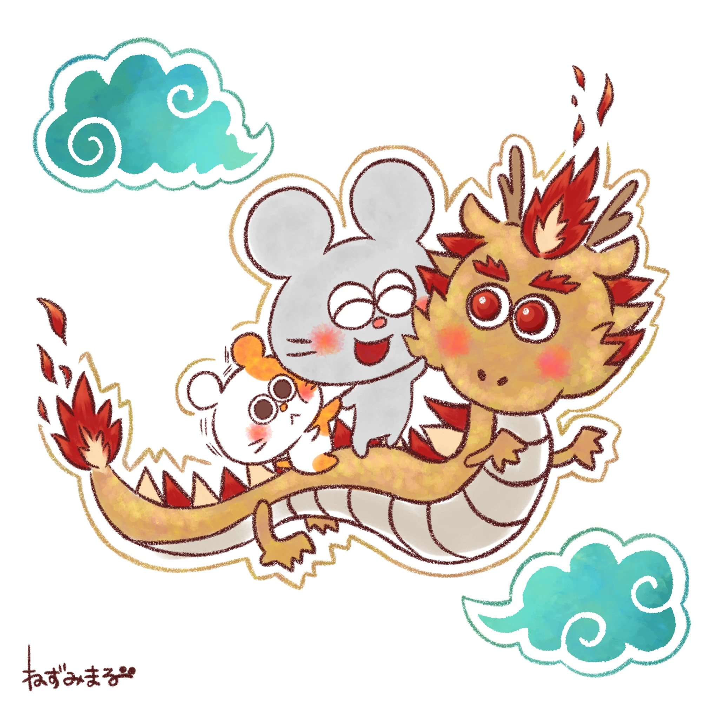
入賞作品
新しいイラストやお知らせは、公式Xで。
ねずみのちょろり 公式X